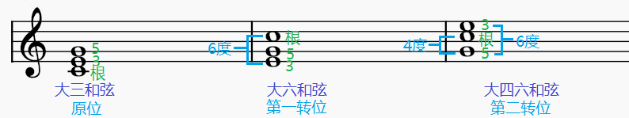
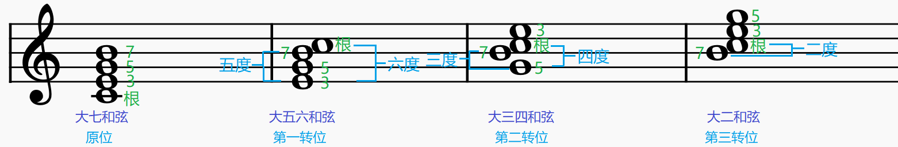
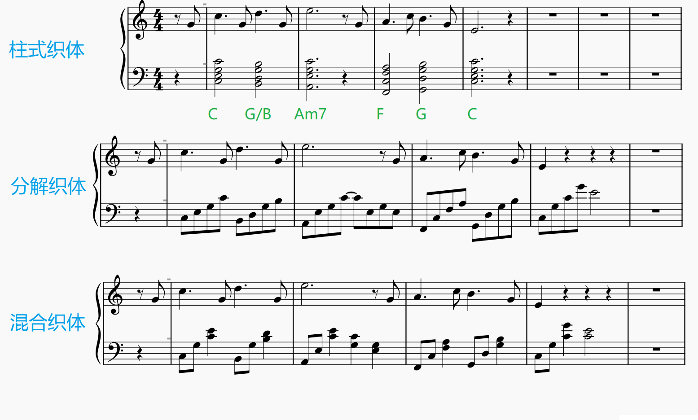
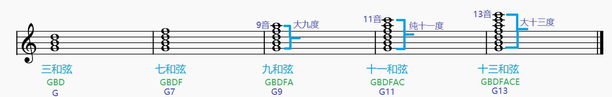
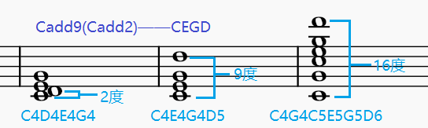
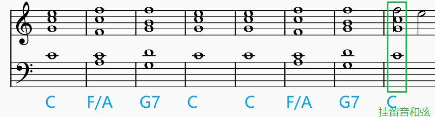
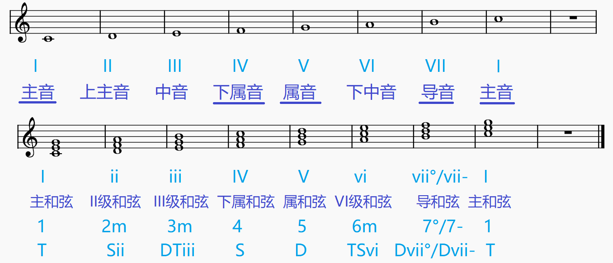

个人乐理自学笔记
本节内容参考自三分钟音乐社 《零基础学音乐·自学乐理第二季》 143-161节
和弦
和弦
三个音或者三个以上的音构成的集体称为和弦。在特定风格或条件下，有些和弦会规律性地省略自己内部的一些音，导致这些和弦看上去只有1或2个音。
和声
和声指不同的和弦组合、连接、运用方式、细节处理等。强调不同和弦连接而形成的整体。
三和弦
三个音，按照三度叠置的关系形成的和弦称为三和弦。三个音由低到高分别为根音、三音与五音。根音到三音，三音到五音的音程皆为三度。
大三和弦与小三和弦
根音到三音是大三度，三音到五音是小三度，称为大三和弦（大+小）。听起来通常感觉明亮、温馨。
根音到三音是小三度，三音到五音是大三度，称为小三和弦（小+大）。听起来通常感觉暗淡、忧伤。
大三和弦与小三和弦的根音到五音是纯五度，是协和音程，听起来顺耳。
增三和弦与减三和弦
根音到三音是大三度，三音到五音是大三度，称为增三和弦（大+大）。
根音到三音是小三度，三音到五音是小三度，称为减三和弦（小+小）。
增三和弦与减三和弦的根音到五音是增五度/减五度，是不协和音程，听起来紧张、压抑。
增三和弦是需要扩张的紧张、压抑，后面通常接大六度；减三和弦是需要收缩的紧张、压抑，后面通常接纯四度或大三度；
三和弦的转位
三和弦的第一转位，指将原位的根音提高八度，三音与五音保持不变。所得和弦低音（三音）与根音的距离是六度，故又称为六和弦。
三和弦的第二转位，指将原位的根音与三音提高八度，五音保持不变。所得和弦低音（五音）与根音的距离是四度，低音（五音）与三音的距离是六度，故又称为四六和弦。
注意转位后音高最低的音（低音）不是根音。
如图为大三和弦的转位，小三和弦、增三和弦、减三和弦同理，其转位后的名称前缀与原位三和弦的前缀相同。

七和弦
四个音，按照三度叠置的关系形成的和弦称为七和弦。四个音由低到高分别为根音、三音、五音、七音。根音到三音，三音到五音，五音到七音的音程皆为三度。
七和弦的命名规则
七和弦名字前有两个前缀，第一个前缀与其根音、三音、五音形成的三和弦前缀相同，第二个前缀与其根音与七音形成的音程前缀相同。
如C4、E4、G4、B4构成的七和弦，其根三五音为CEG，是大三和弦；根音与七音是大七度。分别取两者的前缀，得到七和弦的名称为“大大七和弦”（有两个“大”的情况通常会省略一个，称其为“大七和弦”）。
如B4、D5、F5、A5构成的七和弦，其根三五音是减三和弦；根音与七音是小七度。分别取两者的前缀，得到七和弦的名称为“减小七和弦”。
常用七和弦及其简称
常用的七和弦一共有7种，如下表所示：
| 全称 | 简称/别称 | 举例 |
|---|---|---|
| 大大七和弦 | 大七和弦 | C4、E4、G4、B4 |
| 大小七和弦 | 属七和弦 | G4、B4、D5、F5 |
| 小大七和弦 | D4、F4、A4、C5♯ | |
| 小小七和弦 | 小七和弦 | E4、G4、B4、D5 |
| 减小七和弦 | 半减七和弦 小七降五和弦 |
B3、D4、F4、A4 |
| 减减七和弦 | 减七和弦 | B3、D4、F4、A4♭ |
| 增大七和弦 | 半增七和弦 大七升五和弦 |
F4、A4、C5♯、E5 |
这里减小七和弦又称“半减七和弦”，指的是相较于“减减七和弦”，减小七和弦只有一个减。半增七和弦同理。
这里减小七和弦又称“小七降五和弦”，是指将小七和弦的五音降低一个半音，就可以得到减小七和弦。增大七和弦同理，可以将大七和弦的五音升一个半音来得到，故可称为“大七升五和弦”。
七和弦的转位
七和弦的转位根据低音与七音、根音的度数来命名。
七和弦的第一转位，指将原位的根音提高八度，三音、五音、七音保持不变。所得和弦低音（三音）与七音的距离是五度，低音与根音的距离是六度，故又称为五六和弦。
七和弦的第二转位，指将原位的根音与三音提高八度，五音、七音保持不变。所得和弦低音（五音）与七音的距离是三度，低音与根音的距离是四度，故又称为三四和弦。
七和弦的第三转位，指将原位的根音、三音、五音提高八度，七音保持不变。所得和弦低音（七音）与根音的距离是二度，故又称为二和弦。
如图为大七和弦的转位，与三和弦类似，七和弦的转位后的名称前缀与原位七和弦的前缀相同。

广义的和弦原位与转位、转位的意义
判断和弦的两条标准：①和弦的构成音；②低音。
如大三和弦的构成音为CEG，低音为C。只要满足这两个条件构成的和弦就是大三和弦。与构成音的数量、所处的组无关。C3E4G5、C4E4G4E5G5等都是大三和弦。
只要和弦的根音不是低音，转位构成音仍是原位的构成音，则都是（广义的）该和弦的转位。不局限于提高或降低八度。如大三和弦原位C4E4G4，可以转位为E4G4C6(C/E)、G3C4E5(C/G)等。
转位的意义：①使声部进行流畅；②构建低音线条。
和弦的织体
织体(texture)是一个抽象的概念，用于描述乐曲的状态、形态、造型、形式、神态、质感等，可以用来形容声部关系、节奏、和声、附调、配器等的相互关系。
和弦的织体表示和弦在纵横两个方向上的具体形态。常见的和弦织体有柱式织体、分解织体、混合织体等。

柱式织体：
分解织体：
混合织体：
和弦固定标记法
三和弦的标记
| 全称 | 标记 |
|---|---|
| 大三和弦 | XMajor(Xmajor) XMaj(Xmaj) XM X |
| 小三和弦 | Xminor Xmin Xm X- |
| 增三和弦 | Xaugmented Xaug X+ |
| 减三和弦 | Xdiminished Xdim X° |
七和弦的标记
| 全称 | 简称/别称 | 标记 |
|---|---|---|
| 大大七和弦 | 大七和弦 | XMajor7(Xmajor7) XMaj7(Xmaj7) XM7 XΔ7 |
| 大小七和弦 | 属七和弦 | Xdominant7 Xdom7 X7 |
| 小大七和弦 | XminorMajor7 XminMaj7 XmMaj7 XmM7 X-M7 X-Δ7 |
|
| 小小七和弦 | 小七和弦 | Xminor7 Xmin7 Xm7 X-7 |
| 减小七和弦 | 半减七和弦 小七降五和弦 |
Xdim(m7) X°(m7) Xhalf-dim7 XØ7 Xm7(♭5) Xm7-5 |
| 减减七和弦 | 减七和弦 | Xdiminished7 Xdim7 X°7 |
| 增大七和弦 | 半增七和弦 大七升五和弦 |
Xaug(maj7) X+(maj7) X+Δ7 XM7+5 XM7♯5 XΔ7+5 XΔ7♯5 |
注意这里“减”前缀的标记不是“-”，而是“°”，“小”前缀的标记是“-”，这里容易产生混淆。
斜杠和弦
斜杠和弦（又称slash和弦、分数和弦、分割和弦）可以用于表示含有转位的和弦。其表示方法为“X/Y”，其中X为原位和弦标记，Y为低音。
如“C/G”表示的就是低音为G的C大三和弦（四六和弦），是三和弦的第二转位，根音与三音皆提高八度。
再如“F♯Δ7/C♯”表示低音为C♯的F♯大七和弦（大三四和弦），是大七和弦的第二转位，根音与三音皆提高八度。
再如“Bm7-5/A”表示低音为A的B减小七和弦（减小二和弦），是减小七和弦的第三转位，根音、三音、五音皆提高八度。
斜杠和弦亦可用于再原和弦基础上加一个不在此和弦内的音。
如“Fm/G”中Fm为F小三和弦（构成音F、A♭、C），G表示以G为低音。该斜杠和弦表示同时奏G、F、A♭、C四个音（如G3、F4、A4♭、C5）。
九音、十一音、十三音
九和弦有五个音，在七和弦的基础上增加一个九音；十一和弦有六个音，在九和弦的基础上增加一个十一音；十三和弦有七个音，在九和弦的基础上增加一个十三音。九和弦、十一和弦、十三和弦举例如下图所示：

九和弦、十一和弦、十三和弦的标记遵循以下规则：
①若标记中的9（或11、13）没有升降号，则该和弦根音与九音（或十一音、十三音）的音程为大九度（或纯十一度、大十三度）。
如Fm7(11)表示的小七和弦由F、A♭、C、E♭构成，要求根音与十一音的音程为纯十一度，则十一音应为B♭。
②在实际乐谱中，并不要求根音与九音（或十一音、十三音）的音程必须为大九度（或纯十一度、大十三度）。只要求和弦构成音正确。
如D7(11)表示大小七和弦加一个与根音距离为纯十一度的十一音，其构成音为“D、F♯、A、C、G”。在实际乐谱中，这五个音可以是D4、F4♯、A4、C5、G5，也可以是D4、G4、F4♯、A4、C5（将G5移动到G4），虽然此时根音与十一音的音程是四度，但是其构成音仍是D7(11)的构成音，因此仍可用D7(11)表示。依据为“判断和弦的两条标准”。
③标记直接后接9、11、13时，需要包含其下方所有三度叠加音。
如CM11的构成音为“C、E、G、B、D、F”，这里既有十一音，也有九音和七音。
如果想表示七和弦加十一音，则应记为CM7(11)，11要外加一个括号，其构成音为“C、E、G、B、F”。
如果想表示七和弦加九音与十三音，则应记为CM7(9,13)，9与13外加一个括号，其构成音为“C、E、G、B、D、A”。
如果想表示三和弦加一个十一音，则应记为Cadd11，其构成音为“C、E、G、F”。
④和弦构成音过多时，一般优先省略五音。（去掉五音对听觉的影响最小）
⑤标记中的9、11、13可以加升降号。如Fm7(♯11)表示小七和弦加音程为增十一度的十一音，即构成音为“F、A♭、C、E♭、B”。
“♭5 ♯5 ♭9 9 ♯9 11 ♯11 ♭13
13”统称为延伸音(Tension音)，这些音的加入，会增加和弦的不稳定性，增加和弦的张力。
注意这里没有♭11与♯13，因为大小七和弦（属七和弦）的♭11音等同于其3音，♯13音等同于其7音，这使得♭11与♯13变得没有意义。
⑥大小七和弦可以使用⑤中的所有Tension音，其他结构的七和弦只能使用其中的一部分。
加音和弦
加音和弦格式为XaddY，表示在原X和弦基础上加上一个Y音。在这里Y可以为9、11、13，此时加音与根音距离为大九度、纯十一度、大十三度。
如Cadd9表示在C大三和弦基础上加一个大九度音，其构成音有“C、E、G、D”。

在实际乐谱中，并不要求根音与九音的音程必为九度。如上图所示，Cadd9可以为“C4、D4、E4、G4”，此时根音与九音的音程是二度。因此Xadd9也可记作Xadd2（不常用记法）。
同理Xadd11亦可记作Xadd4。由于其所加的纯十一度音容易产生不协和的冲突而导致三音模糊，因此该加音和弦很少使用。
Xadd13亦可记作Xadd6（常用记法），指在X和弦基础上加大十三度音（大六度音）。Xadd6又可进一步简记为X6，称为六和弦，。而三和弦的第一转位也称为六和弦，因此六和弦又两种意义，需要结合具体的构成音加以区分。
Xadd6add9指在X和弦基础上加大六度与大九度音，可进一步简记为X69，称为六九和弦。
同样的构成音及低音可能有不同的和弦名字，如Fadd6的构成音为F、A、C、D，低音为F，而这也是Dm7/F的构成音及低音。但两者的侧重点不一样，在不同的音乐语境下有不同的含义。Fadd6侧重于F大三和弦，在此基础上加入大六度音；Dm7/F侧重于D小七和弦，在此基础上进行第一转位得到低音为F的五六和弦。
挂留和弦
挂留和弦(Suspended和弦、sus和弦)来源于“延留音”或“延留音和弦”。即前一个和弦的某个音X的时值被延长，继续保持在下一个和弦中，导致下一个和弦的音Y被挤掉，推迟了音Y开始发音的时间（也有可能音Y不再发音）。

挂留和弦的举例如上图所示，这里C大三和弦中原本的E4音（三音）被前面的G属七和弦的F4（纯四度音）代替，而E4则推迟半拍才发出。纯四度音挤压掉三音，因此该和弦亦可称为Csus4。
“挂留和弦”最常见的有两种形式，纯四度音挤压掉三音称为sus4，大二度音挤压掉三音称为sus2。（sus和弦中没有三音）
如Csus4的构成音是CFG，就是将三音E替换为纯四度音F；Csus2的构成音是CDG，就是将三音E替换为大二度音D。
省略音和弦
省略音和弦(omit和弦、no和弦)指省略某个和弦的音。如Fm7omit5（或Fm7no5）指省略Fm7和弦（构成音F、A♭、C、E♭）的五音C，得到和弦构成音F、A♭、E♭。
Comit3（或Cno3）指省略C大三和弦的三音E，得到和弦构成音C、G。省略了三音的和弦，模糊了和弦的明暗色彩感。由于该和弦只由根音与五音构成，因此又可简记为C5，称为五和弦。
五和弦也可称作power
chord（强力和弦、重力和弦），常出现在朋克、摇滚、金属等风格中。
和弦功能与级数标记法

对音符与和弦的功能与级数标记法如上图所示，其中音符的级数标记法指的是将大调中的七个音依次标罗马数字I到VII。并将七个音依次命名为主音、上主音、中音、下属音、属音、下中音、导音。
将这七个音做为根音，向上叠加两个三度得如上图所示的三和弦（需要使用大调内的音），可以发现这里的根音I、IV、V形成的是大三和弦，分别记为I（主和弦）、IV（下属和弦）、V（属和弦）；根音II、III、VI形成的是小三和弦，分别记为ii（二级和弦）、iii（三级和弦）、vi（六级和弦）；根音VII形成的是减三和弦，记为vii°（导和弦）。上述规律适用于所有的大调。
和弦同样可以使用阿拉伯数字标记，如上图所示。
功能标记法源自西方功能和声体系理论，使用三种功能记号对和弦进行标记，分别为T（主功能、Tonica）、D（属功能、Dominant）、S（下属功能、Subdominant）。在和声中主功能代表“稳定”，属功能与下属功能代表“紧张”。音乐里和声的底层逻辑，就是从“稳定”到“紧张”再到“稳定”再到“紧张”......通过循环保持音乐的推进。显然主和弦、下属和弦、属和弦分别可以记为T、S、D。其余和弦的标记取决于其体现的功能，如二级和弦具有下属功能，可标记为Sii；三级和弦既有一部分属功能，又有一部分主功能，因此标记为DTiii。全部标记可见上图。
属七和弦原意为“调式中的五级属功能七和弦”，如C大调中的G7便是这种含义下的属七和弦。而这个和弦恰恰是大小七和弦，因此最终泛指“大小七和弦”。
七和弦的级数标记法为级数右下角标7，如C大调的G属七和弦(G7)可标记为\(V_7\)。
转位和弦通过级数右侧数字体现和弦结构。如C大调C大三和弦第一转位(C/E)可标记为\(I_6\)，三和弦第一转位又称为六和弦，这里右下角的6体现该和弦根音与三音的距离是六度。再如C大调E小三和弦第二转位(Em/B)可标记为\({iii}_4^6\)，三和弦第二转位又称为四六和弦，这里右下角的4与右上角6体现该和弦低音与根音的距离是四度，低音与三音的距离是六度。
和声模板
和声模板指一些常见的和弦走向套路，如4536251、15634125、6415、1645等。
使用和声模板需要注意以下几点：
- 几乎所有模板都通过首调方式提示某个音的和弦，可以先使用C调进行创作，然后根据实际需要移调。如1645对应C大调C-Am-F-G。
- 所有模板均采用44拍，且每个和弦占据一个小节，收尾的和弦可以长一点，尽量把整体补成4个或8个小节。如4536251对应C大调F-G-Em-Am-Dm-G-C，前面六个和弦各占一个小节，最后一个C和弦占两个小节。
- 不局限于原位三和弦，可以尝试七、九、转位、add、sus等和弦。
- 织体上可以多做变化。
- 有些模板中的数字可能强调的是低音进行，而不是某级和弦。如17654325这里的7通常指的是“低音为7的属和弦”而非七级和弦。
- 多看谱，多分析，扩充自己的模板库。